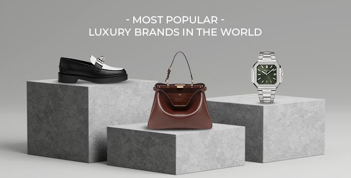

Luxury products represent success, elegance, and premium quality. From designer fashion and luxury watches to premium sports cars and diamond accessories, these products are created for people who admire style, comfort, and high-class living. Modern luxury products are designed with advanced technology, unique craftsmanship, and world-class materials to provide the best experience for customers. Premium brands focus on quality, innovation, and exclusive designs that reflect confidence and achievement. Luxury lifestyle products are not only about appearance but also about status, ambition, and personal success. They inspire people to dream bigger, work harder, and enjoy the rewards of a successful life.
The Trillionaire Store

Welcome to The Trillionaire Store, the ultimate destination for luxury, innovation, and premium lifestyle products.Our platform is specially designed for ambitious people who admire success, wealth, and high-class living. We offer an exclusive collection of luxury watches, premium sports cars, designer fashion, gold and diamond accessories, modern gadgets, business products, and elite lifestyle essentials that represent power and success.At The Trillionaire Store, we believe luxury is not just about products — it is about confidence, vision, and creating a successful future. Every product in our collection is selected with high quality, modern design, and premium standards to provide customers with the best luxury experience. Our goal is to inspire people to dream bigger, work smarter, and achieve financial growth through motivation, business knowledge, and success-driven ideas.In addition to luxury products, our website also shares valuable blogs, video content, and audio podcasts related to business strategies, investing, stock market trends, entrepreneurship, and millionaire mindset development.Whether you are looking for premium products or inspiration for financial success, The Trillionaire Store is your gateway to a world of wealth, style, and unlimited opportunities.